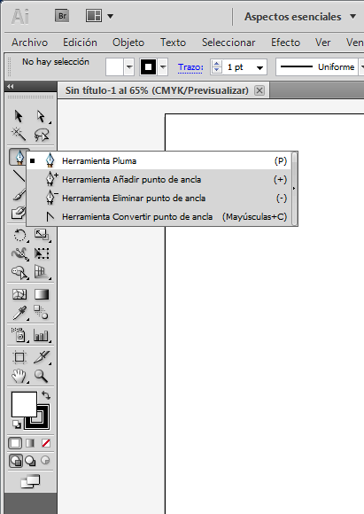
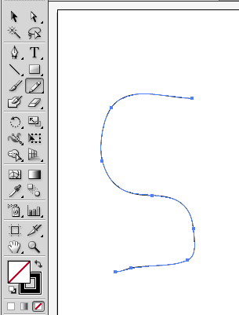
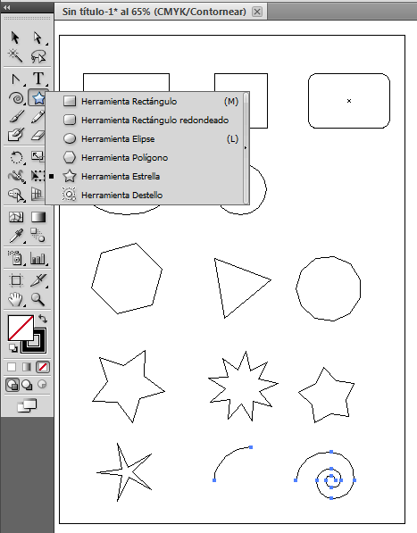
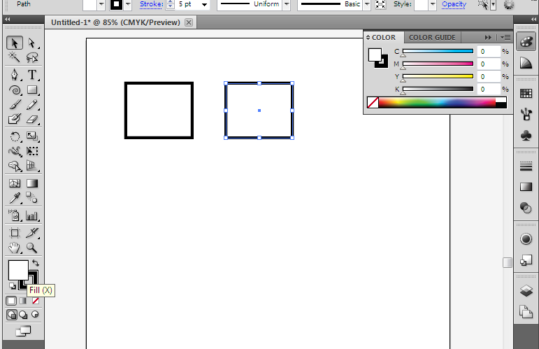
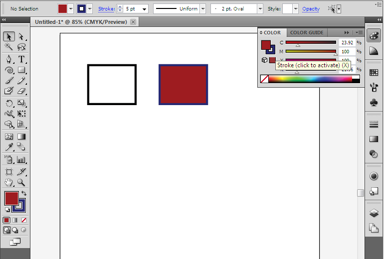

Illustrator
De la misma forma que Photoshop
tiene mucho en común con el GIMP, Illustrator también tiene mucho en
común con Inkscape. Hay varias cosas que funcionan mejor en un
programa o en el otro, pero todas las funciones importantes son muy
similares.
A diferencia de Photoshop, en Illustrator no es posible hacer clic
derecho en las opciones dentro de la caja de herramientas (las que
tienen un triángulo pequeño en la esquina inferior derecha) para hacer
aparecer las opciones detalladas. En Illustrator, se usa el clic
izquierdo y se mantiene presionado hasta que haya pasado suficiente
tiempo y las opciones aparezcan.
Líneas

La
herramienta de Bolígrafo (Pen) trabaja exactamente egual en Ilustrator
que la herramienta Bezier en Inkscape. Cuando haces clic en un
punto nuevo harás una línea recta, y luego si estiras la línea
comenzará a manipular los puntos para curvearla.

La herramienta de Lápiz (Pencil) es tambien similar a las líneas
libres, en que solo haces clic y mantienes presionado el ratón, y la
línea te sigue a donde quiera que te muevas. Sin embargo, la
herramienta en Illustrator es un poco diferente porque automáticamente
convertirá a la línea en una curva Bezier añadiendo todas los nodos
necesarios y aplicando todas las especificaciones necesarias.

Lo que la herramienta Lápiz no hace, sin embargo, es líneas
rectas. En Inkscape la pudiste usar haciendo clic en un punto y
soltándo el ratón, y luego haciendo clic en otro punto en la pantala
para que Inkscape creara una línea recta solida entre ambos
puntos. Para hacer esto en Illustrator, necesitarás la
herramienta de segmento de línea. Con esta herramienta, haces
clic en el punto de partida y mantienes el ratón presionado mientras te
mueves hacia el punto final de la línea.

Formas
Illustrator tiene las mismas formas estándares que tiene Inkscape
(rectángulo, elipse, polígono, estrella, espiral). La única
diferencia importante es que para obtener un cuadrado con esquinas
redondas usarás una herramienta distinta, al igual que para el arco
usarás la herramienta de arco en vez de sólo dibuar un segmento de una
elipse.


Trazado y Relleno
Los conceptos detrás del trazado y relleno en
Illustrator son los mismos que en Inkscape, sin embargo, aquí las
herramientas van a ser algo diferentes.
Aquí tenemos un diálogo de trazado abierto, y estamos cambiando el grosor.

Para cambiar el relleno (o el color del trazado) puedes hacer clic
en el seleccionador de colores en la caja de herramientas, y abrirá el
diálogo de colores.

Puedes altemar entre relleno y trazado haciendo clic en las dos
cajas sobrepuestas. Luego selecciona el color para cada una.

Si no quieres tener un relleno o trazo, selecciona el espacio en
blanco con la línea roja diagonal atravesada. Esto indica "nada".

Al igual que con el GIMP y Photoshop, encontrarás que Inkscape y
Illustrator tienen mucho en común, y fácilmente podrás aplicar tus
destrezas de Inkscape si en algún momento tienes que sentarte a
trabajar en una computadora que sólo tenga Illustrator (aunque también
simplemente puedes instalar Inkscape!)